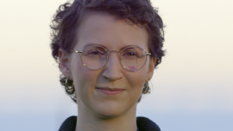
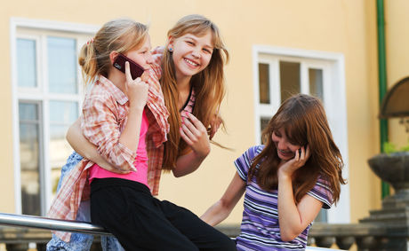

Nyheder
-
Charlotte havde brystkræft: Det ændrede mit liv og min tid
Charlotte opdagede knuden i brystet en morgen i november 2017. Hun stod i badet og sæbede sig ind og kunne mærke, at et område ved brystet ikke var, som det plejede. Hun kørte en hånd hen over stedet igen og tænkte: Det her føles anderledes.
- Jeg gik ind og vækkede min kæreste og sagde: Du skal lige mærke noget. Er det bare mig, eller er der noget her? Han kunne også mærke noget. Så ringede jeg til lægen, fortæller hun.
Charlotte blev scannet et par uger efter, og efter svar på biopsi fandt man ud af, at knuden var brystkræft. Charlotte havde taget sin mor med på hospitalet, hvor en kirurg og en sygeplejerske kom med den nedslående nyhed.
- Jeg tudede bare. Jeg kan huske, at jeg sagde, at det her er en ond drøm, og nu vil jeg gerne vågne, fortæller Charlotte.Wake-up call
Kræftdiagnosen kom som en kile ned i dejligt liv med masser af optimistiske drømme om fremtiden. Charlotte boede i Odense, havde arbejde som jurist, og et halvt år forinden havde hendes kæreste friet til hende. De skulle giftes i marts.
- Inden jeg blev syg, tænkte jeg, at jeg havde masser af tid til at nå det, jeg gerne vil nå. Det hele var så let, og jeg var så ubekymret.
Det ændredes brat som følge af kræftdiagnosen, hvor hun blev indkaldt til scanninger, operationer og kemobehandlinger. Det kørte hurtigt og effektivt. Charlotte beskriver det som et tog, der bare ruller derudad.
- Det er som om, du er stået på et tog, du bare skal køre med, og der er nogle stop undervejs. Du skal opereres, og du skal have kemo. Når toget så stopper, så er det, at du har tid til at finde ud af hvad, det har gjort ved dig, fortæller hun og fortsætter:
- Det er lidt sådan et wake-up call at finde ud af, at jeg ikke bare har oceaner af tid til at nå alt det, jeg gerne vil nå. Jeg er nødt til at bruge tiden godt nu. Gøre noget godt for mig selv og min familie og mine nærmeste. -
Rekordmange piger vaccineret mod livmoderhalskræft i 2018
Antallet af piger, der bliver HPV-vaccineret, fortsætter med at stige. Knap 40.000 piger valgte i 2018 at blive vaccineret mod HPV – det er en stigning på over 20 pct. sammenlignet med året før.
Statens Serum Institut har set nærmere på vaccinationsdækningen i 2018, og tallene bekræfter, at de unge piger og deres forældre igen tager imod tilbuddet om gratis HPV-vaccination. I alt er 38.624 piger påbegyndt HPV-vaccinationen i 2018, mens tallet var på 31.714 i 2017. Det er en positiv fremgang på over 20 pct. Og det skal ovenikøbet ses i lyset af, at 2017 var et rekordår, hvor antallet af piger, der blev HPV-vaccineret, var fordoblet i forhold til året før.
- Vi er utrolig glade for, at så mange piger bliver HPV-vaccineret. For det betyder, at vi fremover vil forvente et markant fald i antallet af kvinder, der får konstateret livmoderhalskræft, siger overlæge hos Kræftens Bekæmpelse, Janne Villemoes Bigaard.Den første forebyggende kræftvaccine
Hver dag får en dansk kvinde konstateret livmoderhalskræft. Heldigvis kan vi med HPV-vaccinen forebygge langt de fleste tilfælde. HPV-vaccinen forebygger nemlig 90 pct. af alle tilfælde af livmoderhalskræft, og det er den første forebyggende kræftvaccine – en vaccine, der også beskytter mod en række andre HPV-relaterede kræftformer og kønsvorter.
- Vaccinen beskytter pigerne mod HPV, som kan medføre celleforandringer, der kan udvikle sig til livmoderhalskræft. Det budskab er vi lykkedes med at få ud til pigerne og deres forældre, især i kraft af informationsindsatsen ”Stop HPV – stop livmoderhalskræft", som Kræftens Bekæmpelse, Sundhedsstyrelsen og Lægeforeningen står bag, siger Janne Villemoes Bigaard.
Vi kan selvfølgelig kun opfordre til, at endnu flere piger i fremtiden vælger at blive vaccineret, når de fylder 12 år, fordi vaccinen virker bedst inden seksuel debut. Overlæge hos Kræftens Bekæmpelse, Janne Villemoes Bigaard.Vaccinen er gratis for piger op til 18 år
Det er ikke for sent at blive vaccineret, selvom man som 12-årig udskød sin vaccination. Vaccinen er nemlig gratis for piger, indtil de fylder 18 år. Og de nye tal viser heldigvis også, at mange piger fra de årgange, der tidligere har haft lav vaccinationsdækning, nu er blevet fuldt vaccineret. I dag er vi oppe på, at næsten 60 procent af de piger, der i år fylder 15 år, er fuldt vaccineret – det vil sige, at de har fået to stik af vaccinen. For et år siden var andelen på 34 procent.
Hvis du er i tvivl, så tag en snak med din læge. HPV-vaccination er gratis for piger, indtil de fylder 18 år. -
Styrketræning efter brystkræft giver livskvalitet – og ikke lymfødem

Under kyndig vejledning fra en fysioterapeut kan styrketræning være et værdifuldt redskab til at hjælpe kvinder tilbage til en god hverdag efter brystkræft. Det viser en ny ph.d.-afhandling fra Kræftens Bekæmpelse.
Kvinder, der er opereret for brystkræft, får ofte at vide, at de ikke må belaste armen efter en operation. Bekymringen har været, at hård fysisk aktivitet ville øge risikoen for lymfødem – en kronisk hævelse, som skyldes, at der ophobes væske i vævet. Man har derfor også været forsigtig med styrketræning i tiden efter en brystkræftoperation.
Men styrketræning øger ikke risikoen for lymfødem. Tværtimod giver træningen mere livskvalitet og mindsker en række senfølger. Det viser en ny undersøgelse, som fysioterapeut og ph.d.-studerende Gunn Ammitzbøll fra Kræftens Bekæmpelse har stået i spidsen for:
- Vi havde håbet, at træningen kunne forebygge lymfødem. Det gjorde det ikke, men vi fandt i stedet at træningen mindskede blandt andet smerte og påvirkede livskvaliteten positivt, siger hun.
Hun understreger, at det er vigtigt, at kvinder, der ønsker at begynde at træne, får vejledning af en fysioterapeut. Det er nødvendigt for at sikre, at øvelserne bliver udført rigtigt, og at man ikke går for hurtigt frem.
Styrketræning har flere gevinster
Kvinderne i forsøget var i gennemsnit 50 år og de ældste 75 år. Foruden den gavnlige effekt over for følgevirkningerne efter kræftbehandlingen er styrketræning generelt godt for kvinder: - Styrketræning styrker knoglerne, hvilket er godt for at modvirke den knoglesvækkelse, der sker, efterhånden som kvinder bliver ældre. Samtidig øger det muskelmassen og giver en bedre funktion i det daglige. Det betyder blandt andet, at man kan fortsætte med de aktiviteter og opgaver i hjemmet, som man er vant til, og ikke får en skade, hvis man eksempelvis arbejder i haven eller vasker vinduer, siger Gunn Ammitzbøll.
Et år med træning
De 158 kvinder, som deltog i forsøget, startede styrketræningen to uger efter deres operation. De fik alle stråleterapi samtidig med styrketræningen, og flere fik også kemoterapi. De var alle udvalgt, fordi de havde særligt høj risiko for at få lymfødem – eksempelvis fordi de skulle have en operation, der fjernede lymfeknuderne i armhulen efterfulgt af strålebehandling.
Kvinderne trænede i 20 uger på hold ledet af en fysioterapeut, som sikrede, at de lavede øvelserne korrekt, så de ikke overbelastede skuldre eller led. Blandt andet er det særligt vigtigt, at skulderbladet er i en neutral tilbagetrukken stilling under øvelserne, hvilket kan være svært efter en brystoperation og strålebehandling, som ofte gør vævet på forsiden mere stramt og hårdt.
Øvelserne bestod blandt andet af træning med vægte og elastikker eller i træningsmaskiner. En vigtig del af den indledende undervisning var, at kvinderne ikke gik for hurtigt frem:
- Mange af kvinderne syntes, det gik langsomt, men det tager tid at opbygge muskelmasse, og det er vigtigt for at undgå overbelastning, siger Gunn Ammitzbøll.
Efter de 20 uger skulle kvinderne træne på egen hånd i et træningsprogram af omkring en times varighed, som de havde lært i løbet af holdtræningen. Det kunne udføres i stuen derhjemme eller i et valgfrit center, og det fulgte deltagerne gennem de næste 30 uger. Kvinderne svarede hver uge på SMS om, hvor meget de havde trænet, og de kunne kontakte Gunn Ammitzbøll med spørgsmål eller hvis der var tegn på begyndende lymfødem.